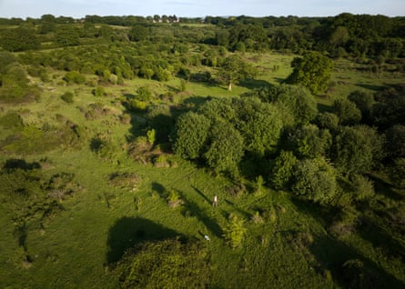

A conservation project in West Sussex has had its best day on record for rare purple emperor butterfly sighting, and ecologists say they are confident the species is doing well nationally.
Purple emperor populations steadily declined over the course of the 20th century but they have been slowly recolonising the landscape at Knepp since 2001 , when Isabella Tree and her husband, Charlie Burrell, decided to turn the stretch of former farmland into a “process-led” rewilding project .
Ecologists at Knepp recorded 283 purple emperors on 1 July alone. Since the site boasts the UK’s largest population of the butterflies, the ecologists said they were confident the numbers were high nationwide.
The Knepp project has boosted the numbers of several species since rewilding began.Photograph: David Levene/The Guardian
Knepp’s purple emperor expert Neil Hulme emphasised that butterfly populations experienced fluctuations rather than steady growth year on year, but he suggested the “top quality rewilded landscape” had allowed the purple emperors to flourish. In particular, he said, Knepp’s “mosaic” of sallow scrub provided a crucial location for female emperors to lay their eggs.
Nature lovers have long been fascinated by the purple emperor, and for at least 250 years have been using unusual methods to lure them from the treetops where they reside. Despite their apparently delicate nature, the butterflies are renowned for feeding on cowpats and decaying animal carcasses. Those in search of a sighting attempt to entice purple emperors with anything from dirty nappies to blue cheese .
Alongside their love for animal flesh, purple emperors can become “intoxicated” on oak sap, enhancing their reputation as “brawling thugs”.
Hulme stressed that although the purple emperors may be the most “glamorous” success story at Knepp, other species had also benefited from the rewilding. Butterflies such as purple hairstreaks and the silver-washed fritillary, as well as nightingales and swifts are also being sighted in record numbers. He described “clouds of butterflies everywhere … none of us want summer 2025 to ever end”.
Tree said the success of the purple emperor showed the power of rewilding: “When nature is allowed to recover, wildlife will return soon after.”